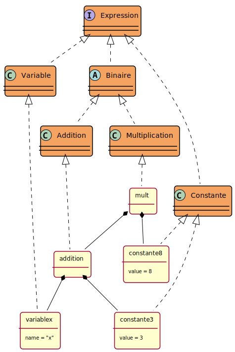

Thèmes du TP
Thèmes du TP
Thèmes du TP
Thèmes du TP Le pattern composite, rappel et compléments
Le pattern composite, rappel et complémentsAucun programme n’est demandé dans ce préliminaire, mais une lecture attentive facilitera l’exécution du reste du TP.
But du pattern Composite: regrouper dans une hiérarchie des objets (simples, complexes y compris récursifs).
Complément au cours: on décrit souvent une telle structure de données par une grammaire :
| Informellement | Formalisé en : |
|---|---|
| Une Composante est un Composite ou une Feuille | Composante ::= Composite OU Feuille |
| Composite est composé de 0 ou plusieurs CompositeConcret | Composite ::= {CompositeConcret} |
| Feuille est une ‘symbole terminal’: un primitif non récursif | Feuille ::= 'symbole terminal' |
de plus un Composite peut être récursif
i.e. défini en terme de Composante.
On applique ce pattern pour représenter la structure d’une Expression Arithmétique sur les nombres entiers :
Avec la grammaire :
Expression ::= Binaire | Nombre | Variable
Binaire ::= Addition | Multiplication | Soustraction | Division
Addition ::= Expression ‘+’ Expression
Multiplication ::= Expression ‘*’ Expression
...
Nombre ::= 'une valeur de type int' En ajoutant la Multiplication, la Division, la soustraction et les opérations unaires Plus, Moins et Factorielle et la possibilité de désigner un nombre par une Variable, on obtient la structure de Données :
Composite des Expressions Arithmétiques entières:
Par exemple l’expression “(3+x)*8” sera représentée par l’objet suivant:
Expression mult = new Multiplication(new Addition(new Constante(3),new Variable("x")), new Constante(8));qui se représente graphiquement comme ci-dessous. Les classes interface et classe abstraites sont marquées avec un C,I et A, les autres rectangles sont des objet (des instances de classes). La flèche en pointillé entre une instance et une classe signifie “est une instance de”.

Le pattern interpreter/interpréteur(toujours rien à programmer dans cette partie)
On reprend le pattern ‘composite’ avec l’idée d’effectuer un traitement uniforme sur chacune des feuilles de la structure. Un traitement typique est une interprétation (dans un monde connu) de la structure de données: par exemple ici une évaluation d’une expression: c’est-à-dire le calcul de sa valeur: l’expression ci-dessus représentant “(3+x)*8” a pour valeur 24 si on suppose que x a pour valeur 2.
Comme on le voit, contrairement à l’exemple du cours les expressions peuvent être des variables. Pour pouvoir évaluer une expression contenant des variables il faut non seulement une expression mais également un contexte: une mémoire dans laquelle sont stockées les valeurs associées aux variables.
On manipule ce contexte via les méthodes:
public Integer lire(String adresse);
public void ecrire(String adresse, Integer valeur);Notez que l’adresse peut être simplement le nom de la variable.
Contexte est une interface et Mémoire une
implémentation:
Donc l’entête de la méthode d’interprétation “calcul de la valeur d’une expression” dans la classe abstraite Expression est la suivante:
public int interprete(Contexte c);Ceci impose l’implémentation de cette méthode par chaque feuille de la structure de données.
Les choix d’implantation de la classe Mémoire sont fixés, cf. le code java correspondant.
Enfin, une classe de tests unitaires montrent quelques utilisations de l’interpréteur.
Remarques:
l’évaluation n’est pas la seule interprétation possible des expressions.
l’affichage des expressions (infixé, postfixé, préfixé) peut être vu comme une interprétation.
La simplification, c’est-à-dire le remplacement des sous expressions purement numériques par leurs valeurs, en est une aussi en ne nécessitera pas de contexte.
etc…
Donc, pour implémenter chaque nouvelle interprétation il faut “ouvrir” pratiquement toutes les classes de la structure de données avec tous les inconvénient que cela comporte: introduction de bugs, non disponibilité du code source, etc.
Dans la question1 nous allons donc utiliser le pattern visiteur pour permettre l’ajout de traitements sans avoir à modifier les classes existantes.
Vous remarquerez un noeud particulier FonctionJava
contenant un nom et un tableau de sous-expressions. Ce noeud représente
un appel à une fonction sur des arguments, comme dans
1+2*f(x+1,y,z) (notation infixe) ou bien
(1,(2;((x,1)+,y,z)f)*)+ (notation postfixe). Ceci est
hors-programme, surtout concernant le VisiteurEvaluation,
mais peut constituer un intéressant sujet pour ceux qui sont déjà à
l’aise avec le reste. Comment évaluer l’appel à une fonction? Il
faudrait accéder à sa définition… Est-ce-qu’on peut mettre cette
définition dans la Memoire?
En tout état de cause il n’y a pas de test de notation utilisant ce noeud et vous n’avez donc pas à considérer ce noeud dans les visiteurs, sauf par curiosité.
 Le pattern visitor/visiteur
Le pattern visitor/visiteur(c’est ici que vous allez devoir commencer à coder)
Idée: Pour éviter l’ouverture et la modification de toutes les classes de la structure pour l’implantation d’une nouvelle méthode de traitement, on décide d’implanter toutes les méthodes de manipulation de la structure dans des classes externes dites “visiteur”. Du coup dans chaque classe de la structure on ne trouve plus qu’une seule méthode qui accepte un visiteur.
Ainsi la classe Expression devrait s’écrire :
package question1;
public abstract class Expression {
public int accepter(Visiteur v);
}
// En utilisant la généricité de java
// public <T> T accepter(VisiteurExpression<T> v){ return v.visite(this);
}Pattern visitor:
Dans le paquetage question1 on a repris les expressions
du paquetage preliminaire.
Remarque: toutes les classes (non-abstraites) contiennent la même méthode:
public <T> T accepter(VisiteurExpression<T> v){ return v.visite(this); }Parenthèse: Cette fonction est redéfinie à l’identique dans chaque
classe concrète. on pourrait être tenté de “factoriser” cette méthode en
la mettant dans une classe abstraite. Par exemple dans
Binaire ou même dans Expressions. Mais cela ne
marche pas. Sauriez vous dire pourquoi? C’est en lien avec
la résolution des appels de méthodes expliquée dans la vidéo “Héritage,
surcharge et la méthode equals” de la section “Rappels
Java” du cours. Indice: la méthode est répétée à l’identique sauf que le
type de this dans v.visite(this) n’est pas le
même.
Bref le type composite est prêt, il s’agit maintenant d’implanter par
le pattern visiteur les différentes interprétations proposées:
évaluation (VisiteurEvaluation), affichage infixe
(VisiteurInfixe), affichage Postfixe
(VisiteurPostfixe).
En vous inspirant de la classe VisiteurInfixe
qui est complète, complétez les classes
VisiteurEvaluation et VisiteurPostfixe et
proposez les tests des classes de tests appropriés (cf :
classe TestACompleter).
Notez qu’un visiteur par défaut VisiteurParDefaut est
défini qui retourne null pour tous les noeuds. Ce visiteur
permet, en faisant extends VisiteurParDefaut au lieu de
externds VisiteurExpression, de compiler (et donc de
tester) votre visiteur avant d’avoir implanté toutes les méthodes.
Le programme suivant:
Contexte m = ...;
VisiteurExpression<String> vp = new VisiteurPostfixe(m);
Expression expr = new Factoriel(Addition(new Constante(3), new Constante(2)));
System.out.println(expr.accepter(vp)));affichera la chaîne:"((3,2)+)!". La même expression
parcourue par le visiteur VisiteurEvaluation retournera
l’entier 720. Regardez les tests pour voir ce qui est attendu.
 Les Expressions Booléennes
Les Expressions BooléennesReproduire pour les Expressions Booléennes ce qui a été obtenu à la question 1 pour les Expressions Arithmétiques.
Diagramme de Classes à respecter :
Remarques :
x+1 < 2*y. Notez
donc que les question2.ExpressionBooleenne contiennent des
question1.Expression.Les visiteurs à implanter sont les suivants (voir également les questions ci-dessous):
Remarques :
AIDE :
Integer, Boolean), pas un type de
base (int, boolean).TestAVerifier. Le visiteur
Le visiteur VisiteurBoolTojavaCode à écrire: Complétez le visiteur
VisiteurBoolTojava; “vérifiez” avec le compilateur javac
(et grâce à la classe de tests fournie) que le code java est
syntaxiquement correct.
 Le visiteur
Le visiteur VisiteurBoolEvaluationCode à écrire: Complétez le visiteur VisiteurBoolEvaluation et proposez une classe de tests de ce visiteur.
Au delà de cette ligne vous êtes dans la partie optionnelle du TP. Il s’agit de définir un composite qui représente les programmes d’un petit langage de programmation: WhileL. Les visiteurs permettront d’exécuter le programme, ou bien de générer du code java compilable.
Il est important de comprendre ici que les instructions du langage
WhileL contiennent des expressions entières et des
expressions booléennes. Les noeuds du composite
Instruction vont donc parfois contenir des
Expression et des ExpressionBooleenne. Par
exemple vous devrez pouvoir effectuer:
Variable a = new Variable(m, "a", 7);
Variable b = new Variable(m, "b", 85);
// b + 1
Expression add = new Addition(b,Constante(1));
// a = b + 1
Instruction aff = new Affectation(a, add); // Une instr qui contient un expr
// 0 == b + 1
ExpressionBooleenne test = new Egal(Constante(0),new Soustraction(b,Constante(1)));
// if (0 == b + 1) { a = b + 1; }
Instruction test = new Selection(test, aff); // contient un expr et un exprbooleenneCeci entraîne qu’un visiteur sur Instruction a besoin
d’un visiteur sur les deux types d’expressions Expression
et ExpressionBooleenne pour savoir quoi faire sur ces
noeuds. Le constructeur du visiteur devra donc prendre deux visiteurs en
paramètres. La création typique d’un visiteur sur
Instruction sera donc de la forme (Cf les tests):
Contexte m = ...;
VisiteurExpression<String> ves = new question1.VisiteurInfixe(m);
VisiteurExpressionBooleenne<String> vbs = new question2.VisiteurBoolToJava(ves);
VisiteurInstruction<String> vs = new question3.VisiteurInstToJava(ves, vbs); WhileL : un (très) petit langage impératif
WhileL : un (très) petit langage impératifLes instructions de WhileL sont représentées dans le composite :
Remarques :
= en java) est la seule instruction à
modifier le contexte.;’ de java, c’est-à-dire que
Sequence (i1,i2) représente le programme
i1 ; i2, c’est-à-dire “exécuter i1 puis
exécuter i2”.if-then-else
(else optionnel)Iteration <<abstract>> car il y a plus d’un
type de boucleassert de java, servira
notamment pour tester le code généré puis compilé (voir plus bas).System.out.println() de
javaLes visiteurs d’évaluation et de ‘traduction’ en java sont demandés:
Ci-dessous, une spécification de l’interprétation/exécution d’une instruction:
|
Spécification informelle : Rappel : l’exécution d’une instruction modifie l’état d’une Mémoire M, une variable (par exemple X) est une adresse de la Mémoire M |
Spécification formelle : règle d’inférence
cf. livre
de Hennessy
Description d’une règle d’inférence : au dessus du trait les hypothèses
à assurer |
L’affectation : X=Exp. si avant exécution l’état de la
Mémoire est M
après exécution l’état de la Mémoire est M1 i.e. maintenant M[X]=N |
<M>,Exp -visite-> N |
La sélection, si(Bexp)alorsI1 sinon I2 : si avant
exécution l’état de la Mémoire est M
après exécution l’état de la Mémoire est M1 ou M2 selon 2. La sélection, si(Bexp)alorsI1: si avant exécution l’état de la Mémoire est M
après exécution l’état de la Mémoire est M1 ou M (inchangée) selon 2. |
<M>,Bexp -visite-> vrai
<M>,Bexp -visite-> faux |
La séquence : I1’;’I2 : si avant exécution l’état de la
Mémoire est M
après exécution l’état de la Mémoire est M2. |
<M>,I1 -visite-> <M1> |
la boucle for (init,Bexp,inc) faire I1: si avant
exécution l’état de la Mémoire est M
|
|
la boucle tantque (Bexp) faire I1: si avant exécution
l’état de la Mémoire est M
|
<M>,Bexp -visite-> faux
|
Complétez les visiteurs
VisiteurInstEvaluation et
VisiteurInstTojava.
Remarques :
VisiteurInstEvalution, par exemple
n’utilisez pas l’instruction while, ni for de
java afin d’implémenter le TantQue de WhileL…VisiteurToString est complet.VisiteurInstTojava ne supporte pas le noeud
Factoriel. En revanche le noeud Afficher est à
implanter et peut servir dans les tests (voir plus bas).VisiteurInstTojavaPour vérifier que le code obtenu avec VisiteurInstTojava
est bien syntaxiquement correct, on utilisera le compilateur java
lui-même.
Vous pouvez le faire à la main pour expérimenter:
main d’une classe
Exemple.java.javac Exemple.java; en principe il
ne doit pas y avoir d’erreur de compilation ni de warning.Affichage.Vous pouvez également utiliser la classe
question3.compilation.Classejava qui permet:
main
de la classe chargée.Afficher
qui se compilera vers un appel à
System.out.println(uneValeur) et provoquera donc un
affichage.Assertion
pour générer des test qui léveront une exception en cas d’échec. De
cette façon vous pouvez générer du code java qui se teste lui-même.Vous pouvez consulter les tests de la classe
TestsVisiteurToJava pour vous en inspirer.
 La boucle “Pour”
La boucle “Pour”On a ajouté la boucle Pour au paquetage
question3 sur le modèle de la boucle for java
(cf. classe Pour). Modifiez les visiteurs en
conséquence.
Remarque:
Servez-vous de la règle d’évaluation ci-dessus pour
implémenter le VisiteurInstEvalution, (n’utilisez
pas le for de java afin d’implémenter le Pour
de WhileL…)
 Les classes de tests
Les classes de testsle bon fonctionnement des classes de Tests.
Aucune soumission n’est demandée. Dans ce postliminaire, trois visiteurs ont été développés afin de générer du bytecode (https://fr.wikipedia.org/wiki/Bytecode_Java) pour notre petit langage WhileL à destination d’une machine java.
L’exécution des visiteurs engendre un code Jasmin, qui est ensuite exécuté, cf. la classe de tests de ce paquetage.
Optionnel: ajoutez votre exemple de génération de code à la classe de tests.
Votre exemple sera ajouté à la classe de tests, pour vos successeurs…
Liens utiles:
un exemple:
Le calcul du pgcd en java
Ce même calcul en WhileL
Ce même calcul en Jasmin (un extrait)